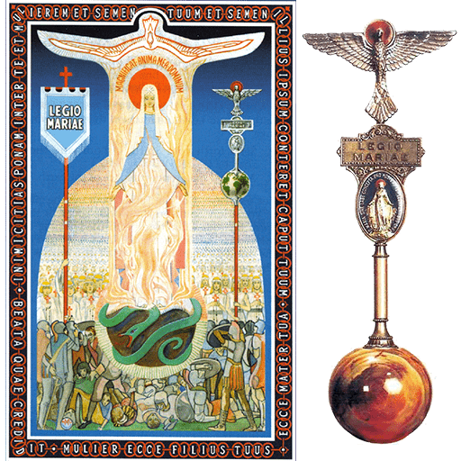

Devotion
Legion of Mary
Opening prayers, the Catena Legionis, and concluding prayers.

Opening Prayers
(Make the Sign of the Cross) In the name of the Father, and of the Son and of the Holy Spirit. Amen.
Come, O Holy Spirit, fill the hearts of Your faithful, and enkindle in them the fire of Your love.
v. Send forth Your Spirit, O Lord, and they shall be created.
R. And You shall renew the face of the earth.
Let us pray.
God our Father, pour out the gifts of Your Holy Spirit on the world. You sent the Spirit on Your Church to begin the teaching of the gospel: now let the Spirit continue to work in the world through the hearts of all who believe. Through Christ our Lord. Amen.
v. You, O Lord, will open my lips.
R. And my tongue shall announce Your praise.
v. Incline unto my aid, O God.
R. O Lord, make haste to help me.
v. Glory be to the Father, and to the Son and to the Holy Spirit
R. As it was in the beginning, is now and ever shall be world without end.
Amen.
—Then follow five decades of the Rosary with the Hail, Holy Queen.
Hail, Holy Queen, Mother of Mercy; hail, our life, our sweetness and our hope. To you we cry, poor banished children of Eve, to you we send up our sighs, mourning and weeping in this valley of tears. Turn then, O most gracious advocate, your eyes of mercy towards us, and after this our exile, show us the blessed fruit of your womb, Jesus. O clement, O loving, O sweet Virgin Mary.
v. Pray for us, O holy Mother of God.
R. That we may be made worthy of the promises of Christ.
Let us pray.
O God, Whose only-begotten Son, by His life, death and resurrection, has purchased for us the rewards of eternal salvation; grant, we beseech You, that meditating upon these mysteries in the most holy Rosary of the Blessed Virgin Mary, we may imitate what they contain, and obtain what they promise. Through the same Christ our Lord. Amen.
v. Most Sacred Heart of Jesus
R. Have mercy on us.
v. Immaculate Heart of Mary
R. Pray for us.
v. St. Joseph
R. Pray for us.
v. St John the Evangelist
R. Pray for us.
v. St. Louis-Marie deMontfort
R. Pray for us.
(Make the Sign of the Cross) In the name of the Father, and of the Son and of the Holy Spirit. Amen.
The Catena Legionis
Antiphon. Who is she that comes forth as the morning rising, fair as the moon, bright as the sun, terrible as an army set in battle array?
(Make the Sign of the Cross)
v. My soul glorifies the Lord.*
R. My spirit rejoices in God, my Saviour.
v. He looks on His servant in her lowliness;* henceforth all ages will call me blessed.
R. The Almighty works marvels for me.* Holy His name!
v. His mercy is from age to age,* on those who fear Him.
R. He puts forth His arm in strength* and scatters the proud-hearted.
v. He casts the mighty from their thrones* and raises the lowly.
R. He fills the starving with good things,* sends the rich away empty.
v. He protects Israel His servant,* remembering His mercy,
R. The mercy promised to our fathers,* to Abraham and his sons for ever.
v. Glory be to the Father, and to the Son and to the Holy Spirit.
R. As it was in the beginning is now, and ever shall be, world without end. Amen.
Antiphon. Who is she that comes forth as the morning rising, fair as the moon, bright as the sun, terrible as an army set in battle array?
v. O Mary, conceived without sin.
R. Pray for us who have recourse to you.
Let us pray.
O Lord Jesus Christ, our mediator with the Father, Who has been pleased to appoint the Most Blessed Virgin, Your mother, to be our mother also, and our mediatrix with You, mercifully grant that whoever comes to You seeking Your favours may rejoice to receive all of them through her. Amen.
Concluding Prayers
(Make the Sign of the Cross) In the name of the Father, and of the Son and of the Holy Spirit. Amen..
We fly to your patronage, O holy Mother of God; despise not our prayers in our necessities, but ever deliver us from all dangers, O glorious and blessed Virgin.
v. Mary Immaculate, Mediatrix of all Graces (or Invocation appropriate to Praesidium)
R. Pray for us.
v. Sts. Michael, Gabriel and Raphael
R. Pray for us.
v. All you heavenly Powers, Mary's Legion of Angels
R. Pray for us.
v. St. John the Baptist
R. Pray for us.
v. Saints Peter and Paul
R. Pray for us.
Confer, O Lord, on us, who serve beneath the standard of Mary, that fullness of faith in You and trust in her, to which it is given to conquer the world. Grant us a lively faith, animated by charity, which will enable us to perform all our actions from the motive of pure love of You, and ever to see You and serve You in our neighbour; a faith, firm and immovable as a rock, through which we shall rest tranquil and steadfast amid the crosses, toils and disappointments of life; a courageous faith which will inspire us to undertake and carry out without hesitation great things for your glory and for the salvation of souls; a faith which will be our Legion's Pillar of Fire - to lead us forth united - to kindle everywhere the fires of divine love - to enlighten those who are in darkness and in the shadow of death - to inflame those who are lukewarm - to bring back life to those who are dead in sin; and which will guide our own feet in the way of peace; so that - the battle of life over - our Legion may reassemble, without the loss of any one, in the kingdom of Your love and glory. Amen.
May the souls of our departed legionaries and the souls of all the faithful departed through the mercy of God rest in peace. Amen.
(Make the Sign of the Cross) In the name of the Father, and of the Son and of the Holy Spirit. Amen.